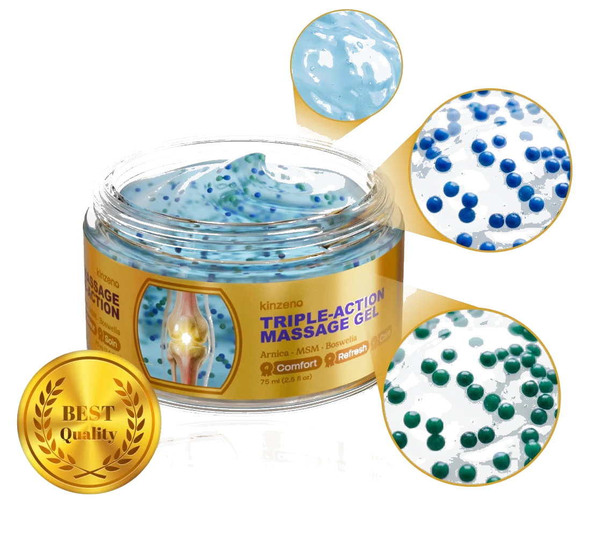

I spent 31 years as a physio. Helped close to 8,000 patients walk without pain. Coached them through rehab after hip replacements, knee reconstructions, shoulder surgeries.
And when my own knees started going, I did everything I'd told my patients to do.
Glucosamine. Fish oil. Turmeric capsules. Heat packs every single night. Compression sleeves on both knees like an athlete getting strapped up before a big game.
None of it worked. Not even close. And if you're reading this, I think you already know that feeling.
This is what my mornings looked like. Every. Single. Day.
The cruel part? I knew exactly what was happening inside my joints. I'd explained it to thousands of patients. But knowing WHY it hurts doesn't stop it hurting, does it?
My wife caught me one morning, standing at the back door, watching our dog Biscuit wait by the gate. He wanted his walk. I just stood there because I knew the first 200 metres would be agony.
Sound familiar? Keep reading. What I found next changed everything.
Most people go straight for the 3-bottle pack. Smart move.
"You need to talk to Sarah," she said. Sarah is our daughter. She's a sports medicine researcher at a university.
I didn't want to. Pride, mostly. I was the guy who fixed joints for three decades. Asking my kid for help felt like admitting I'd been wrong about something fundamental.
But I rang her that evening.
What Sarah told me changed everything I thought I knew about joint pain
"Dad, the problem isn't that you're getting old," she said. "The problem is you're fighting three fires at once with a single bucket of water."
Sarah explained the three things happening simultaneously in a stiff, painful joint:
1. Your synovial fluid is thinning out. That's the lubricant inside the joint capsule. After 50, production slows. The joint literally dries up. Every movement grinds cartilage against cartilage.
2. The 5-LOX inflammatory pathway is running unchecked. Your body sends inflammatory signals to protect the joint. But the inflammation itself causes more damage, which triggers more inflammation. A vicious loop.
3. Everything you're swallowing has to survive your gut first. Oral supplements lose up to 80% of their active compounds during digestion. By the time they reach your bloodstream, then travel to the joint, there's almost nothing left to work with.
"That's why the turmeric pills aren't helping," she said. "They're not rubbish. They just can't get enough of the active compound to where it actually needs to be."
If you've been swallowing supplements for months and wondering why nothing's changed, this is why.
Then she asked me something I didn't expect: "Have you tried going through the skin instead of through the stomach?"
I laughed. I'd used topical creams for 31 years. Most of them barely penetrate past the first layer of skin. They feel warm for 20 minutes and then nothing.
"Not a cream, Dad. A microbubble gel."

The gel Sarah sent me. Not what I expected from a "joint product."
The three-phase approach I'd never seen before
Sarah sent me a gel called Kinzeno. She'd been looking at the formulation for a research review and thought the delivery system was genuinely different from the heat-rub stuff I was used to.
The difference is what they call the "3-Phase Microbubble Delivery System." Each phase uses a different type of microsphere that breaks down at a different depth beneath the skin.
Blue microspheres dissolve on contact. Arnica Montana and allantoin start calming the surface inflammation immediately. You feel the area settle down.
Amber microspheres penetrate deeper, carrying magnesium complex and MSM directly to the joint tissue. These are the compounds that address the 5-LOX pathway Sarah was talking about. They don't just mask the signal. They interrupt the inflammation loop.
Green microspheres are the slowest to break down. They carry Boswellia Serrata and frankincense extract. These keep working long after you've stopped rubbing. The manufacturer claims up to 8 hours of continued delivery.
What interested me as a physio is that this isn't a passive cream. You massage a coin-sized amount into the joint for about 60 seconds. The massage itself promotes blood flow to the area, and the microspheres ride that circulation deeper than a cream you just smear on and forget.
The massage ritual. Coin-sized amount, circular motions, about 60 seconds.
The microbubbles dissolving at different depths. This is what makes it different from a regular cream.
Free shipping. 60-day money-back guarantee. Zero risk.
Stock is running low. Don't wait on this one.
What happened when I actually tried it
I started with my right knee, the worse one. Applied the gel before bed, massaged it in for about a minute using circular motions the way I'd taught patients for years.
Within 90 seconds, the constant low-grade ache that I'd been living with for three years started to ease. I'm not talking about numbness. It wasn't a cooling or heating sensation. The ache just went quiet.
I woke up at 5am expecting the usual morning stiffness. The kind where you grip the bedside table and straighten your legs slowly like you're defusing a bomb.
I swung my legs out of bed and stood up. Just like that.
Applying Kinzeno before my morning walk. 60 seconds, that's it.
By day four, I was walking Biscuit again. The full route. 2.4 km around the park and back. My wife was filming me through the kitchen window. I only found out when she texted the video to Sarah.
What's actually in it
I went through the label properly because that's the physio in me. Here's what I found:
Used for centuries for bruising and swelling. In this gel, it's in the first-phase microspheres for immediate comfort.
A natural sulphur compound. Multiple studies show it supports joint flexibility and helps manage exercise-related inflammation.
The frankincense extract. This is the one Sarah was most interested in. Research suggests it targets the 5-LOX enzyme directly, which is specifically involved in joint inflammation.
Critical for muscle relaxation around the joint. When muscles surrounding a stiff joint are constantly tense, they make the pain worse. Magnesium delivered topically goes straight to those muscles.
White turmeric, ginger extract, ginseng, moringa, B-complex vitamins, Vitamin E, and Vitaluxe Complex (their proprietary blend).
60-day money-back guarantee. No questions asked.
This promo won't last. Seriously.
Kinzeno lists all its ingredients, but the exact amount of each compound per application isn't disclosed. That's common with proprietary blends, but it means you can't compare milligram-for-milligram against standalone supplements. The manufacturer (UAB Mindra, registered in Lithuania) hasn't published independent clinical trials on this specific formulation. The individual ingredients have research behind them, but the combined gel formula hasn't been tested in a peer-reviewed study that I could find. I'm sharing my personal experience, not making a medical claim.
What I tell people who ask about it
I've recommended Kinzeno to 14 former patients so far. Eleven rang me back within the first week to say it was helping. Two said they noticed some improvement but wanted to give it more time. One said he couldn't tell the difference, and I told him to use the money-back guarantee. He did, no problems.
That's a fair result for anything in this space. Nothing works for everyone, and anyone who claims otherwise is not being honest with you.
What I like about this gel, speaking as someone who's evaluated hundreds of joint products professionally:
It goes where the problem is. Directly onto the joint. No waiting for your stomach to break it down, no hoping enough gets into your bloodstream.
The massage component is part of the treatment. As a physio, I've always believed manual therapy is half the battle. This gel forces you to spend 60 seconds actually working the area, which most people wouldn't bother doing otherwise.
It's drug-free. No NSAIDs, no paracetamol, no prescription needed. You can use it alongside whatever your doctor has you on already (though check with them first, obviously).
Before you talk yourself out of this
So had I. For 31 years. The difference is delivery depth. Most topical products sit on the skin surface. The microbubble system is designed to carry active compounds 2-3cm below the skin. That's a fundamentally different approach. Whether it works for you specifically, you'll know within a few days.
I'm a retired physio, not some influencer. I didn't get paid to write this. I'm sharing it because I spent a year in pain I didn't need to be in, and I don't want someone else going through the same rubbish. If it doesn't work, you get your money back. There's nothing to lose except the pain.
Compare the price of a single bottle to what I was spending every month on glucosamine, turmeric, and fish oil capsules that weren't doing a thing. Or what a single physio session costs, the very visits I was providing to other people. One bottle lasts about a month with daily use.
60-day money-back guarantee. Full stop. Use the whole bottle. If it doesn't help, send it back and get a refund. One of my former patients did exactly that. No problems, money returned. That's how it should work.
How to get Kinzeno
It's only available through their official website. You won't find it at your local pharmacy. They run a promotion with up to 70% off that comes and goes. Last time I checked, it was still active, but I wouldn't sit on it.
60-Day Money-Back Guarantee
Try Kinzeno for up to 60 days. If you're not satisfied for any reason, contact the manufacturer for a full refund. No questions asked.
Free shipping. 60-day guarantee. You literally cannot lose.
This price won't last. Once this batch is gone, it goes back to full price.
I still apply it every morning before Biscuit's walk and every evening before bed. Two minutes of my day. That's it.
Look, if your joints are stopping you from doing the things you used to do without thinking, you owe it to yourself to try this. Worst case, you use the 60-day guarantee and get every cent back. Best case, you get your life back. I did.
James Mitchell